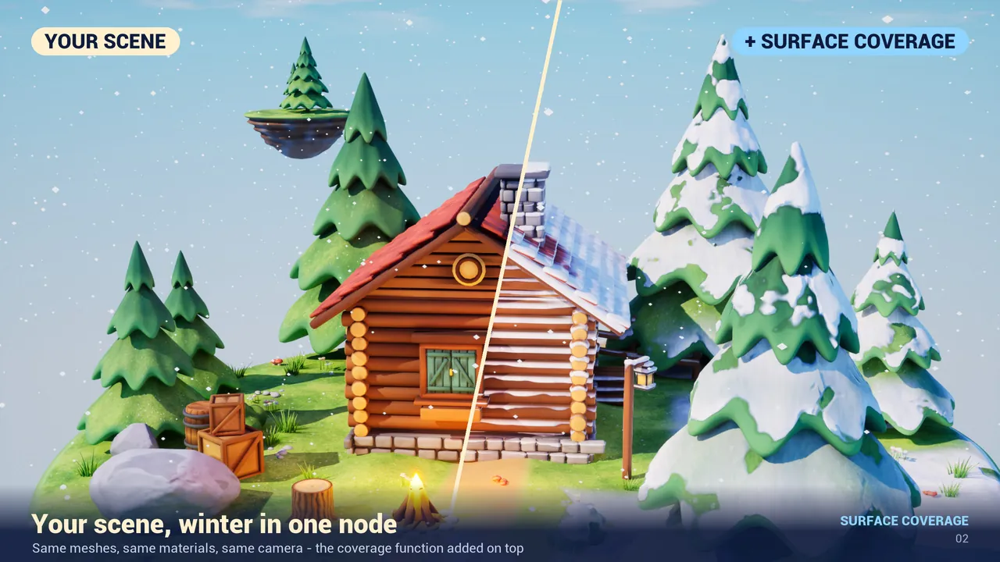
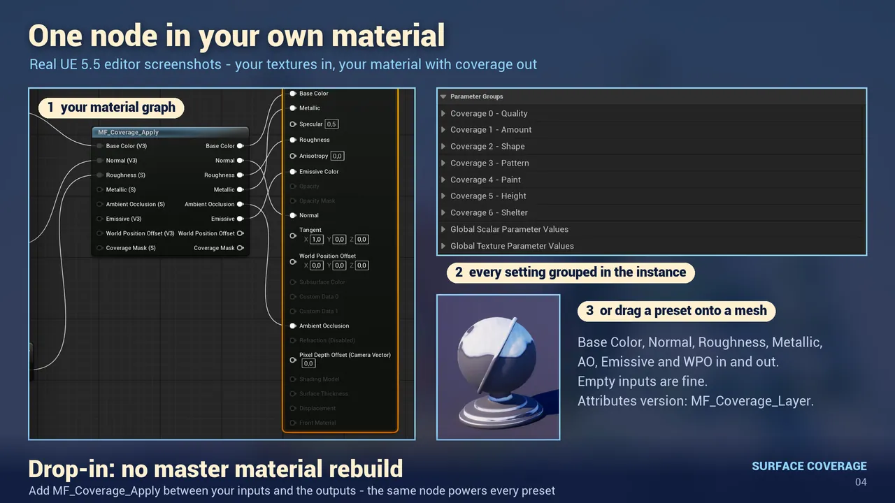
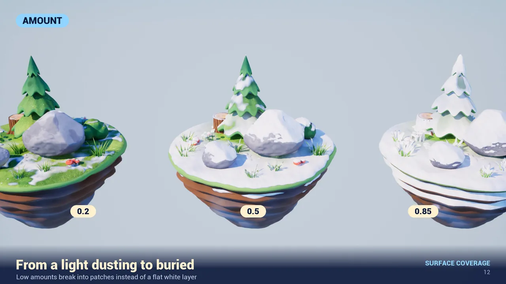
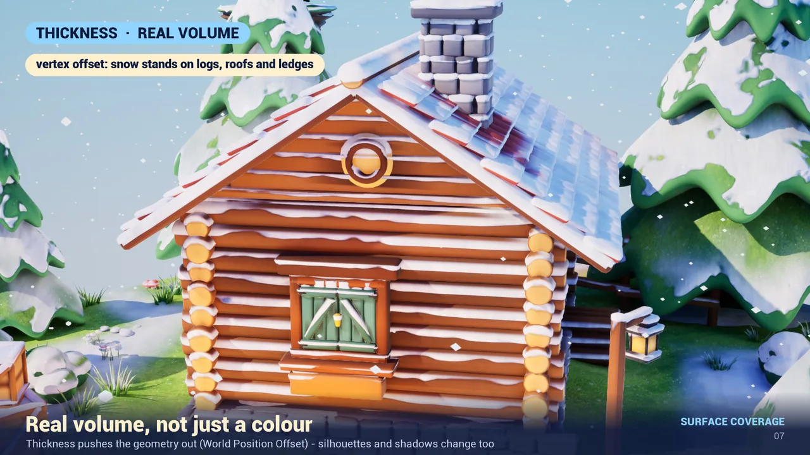
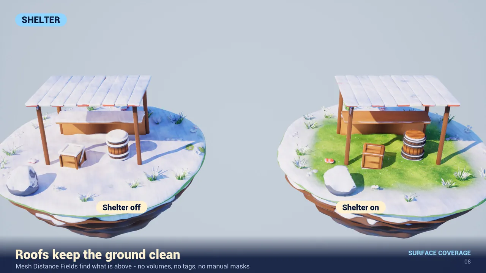
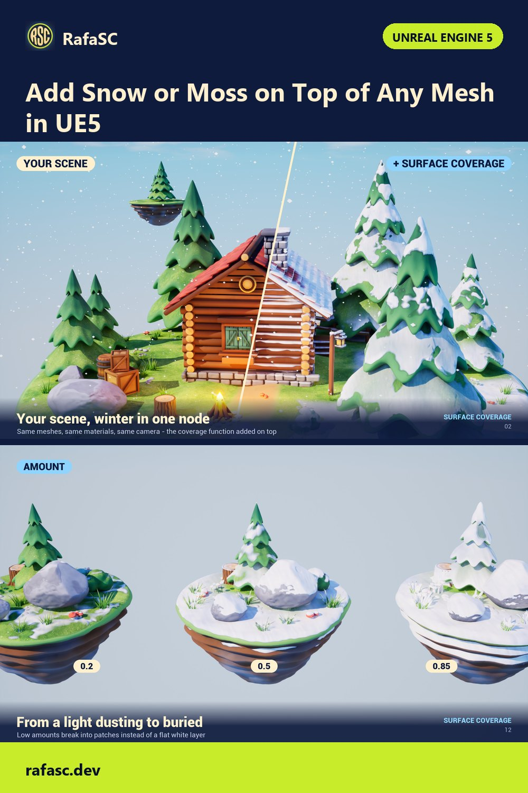

Snow and moss
How to add snow or moss on top of any mesh in UE5
To put snow or moss on top of any mesh in Unreal Engine 5, blend a second surface over your material wherever the surface faces up in world space. Because the test is done in world space, the snow stays on top when you rotate, scale or move the object, even at runtime.
By RafaSC, 3D and technical artist · Updated · 7 min read

The idea: how much does this pixel face the sky
Everything starts from one question asked for every pixel: how much does this surface face a direction, usually straight up?
- Take the surface normal in world space. If you use the pixel normal, your normal map counts and snow settles on the top edge of every brick and plank.
- Compare it with the up direction
(0, 0, 1)using a dot product. Facing up gives 1, a wall gives 0. - Push that value through a threshold so you choose how steep a surface can be and still get covered.
- Use the result as the alpha of a blend between your surface and the snow: colour, roughness and normal.
That works in ten minutes, and it looks like it: a flat white cap with a ruler-straight edge on every top face. The difference between that and snow that looks painted is in four extra things.

What makes it look painted
- A broken edge. Organic noise moves the threshold, so the border has shapes instead of a line. It should fade on vertical faces so walls stay clean.
- A lip. A rounded, shaded band along the border, lit by your lights, reads as thickness even on a flat mesh.
- Real volume. Pushing the vertices out with World Position Offset changes the silhouette and the shadows.
- Shelter. Ground under a roof should stay clean. A dot product cannot know there is a roof above.
Drop-in: one node in your own material
Stylized Snow & Moss Coverage packs all of that into one Material Function.
- Open your material. Right-click in the graph, type Coverage and add MF_Coverage_Apply.
- Connect what you already had to its inputs: Base Color, Normal, Roughness and, if you have them, Metallic, Ambient Occlusion, Emissive and World Position Offset. Empty inputs are fine.
- Connect its outputs with the same names to the material pins. Connect World Position Offset too if you want real thickness.
- Save and create a Material Instance. All settings appear under Coverage 0 to 6.

If you do not want to edit materials at all, drag a preset such as MI_Coverage_Snow onto a mesh, create a Material Instance from it and set the Base Color, Base Texture and Normal Texture of your surface. For materials that use Material Attributes there is MF_Coverage_Layer: attributes in, attributes out.
Amount, direction and your normal map
| Setting | What it changes |
|---|---|
| Amount | 0 is nothing, 1 goes down the sides. Low values break into patches instead of a flat cap |
| Sharpness | Soft for dust, crisp for stylized snow. The edge never gets sharper than a pixel, so it does not shimmer in motion |
| Breakup Amount and Scale | The organic shapes on the edge |
| Direction | Any world direction. (1, 0, 0.35) gives moss on one side; (0.4, 0, 1) gives snow blown by the wind |
| Normal Detail | 0 uses the mesh shape only, 1 also uses your normal map |

Real volume
Thickness pushes each vertex out along its normal, in centimetres. It needs enough vertices and smooth normals: a mesh with hard, split edges, like a default cube, can open thin gaps along those edges. The presets ship with Thickness 0 so they are safe on any mesh. Raise it to 3 to 5 for snow on smooth meshes.

Clean ground under roofs
The shelter samples the Global Distance Field above each pixel, twice. Under a roof, an eave or a table something is much closer above the pixel, so it stays clean. There are no actors, tags or traces involved. It needs Generate Mesh Distance Fields in Project Settings > Rendering, which is on by default in UE5. Without it the shelter switches itself off and everything else still works. Indoors, set Shelter Amount to 0, because the shelter sees the ceiling.

Cost and limits
M_Coverageis 1708 pixel-shader instructions in High quality and 1218 in Low. An empty lit material is 164. Measured in a new UE 5.5 project, DX12 SM6.- No texture is required. Use Low Quality for distant or massively instanced meshes.
- Tested with Nanite, Lumen and Virtual Shadow Maps on UE 5.5 and 5.8, Windows.
- Not for the Path Tracer or UEFN. Mobile was not tested.
To make it change while you play, see runtime snow and melt zones.
Watch the full walkthrough
Stylized Snow & Moss Coverage for Unreal Engine 5: painted over any material · Watch on YouTube
Frequently asked questions
How do I make snow stay on top when the object rotates?
Do the test in world space, not in object or tangent space. Compare the world-space normal with the up direction. Then the snow stays on top however the object is rotated, scaled or moved.
Why is everything under my roof covered in snow?
A simple up-facing mask cannot know there is a roof. Surface Coverage uses Mesh Distance Fields for that: check that they are on, that Shelter Amount is 1, and raise Shelter Distance to your roof height.
Why do gaps open along the edges of my box when I add thickness?
Thickness moves each vertex along its normal. A mesh with hard, split normals opens gaps. Use Thickness 0 on such meshes, or give them smooth normals or a bevel.
Does it work on my existing materials?
Yes. Add one node, MF_Coverage_Apply, between your inputs and the outputs. For Material Attributes use MF_Coverage_Layer.
Related guides

Save this guide for later. Product used on this page: Stylized Snow & Moss Coverage.